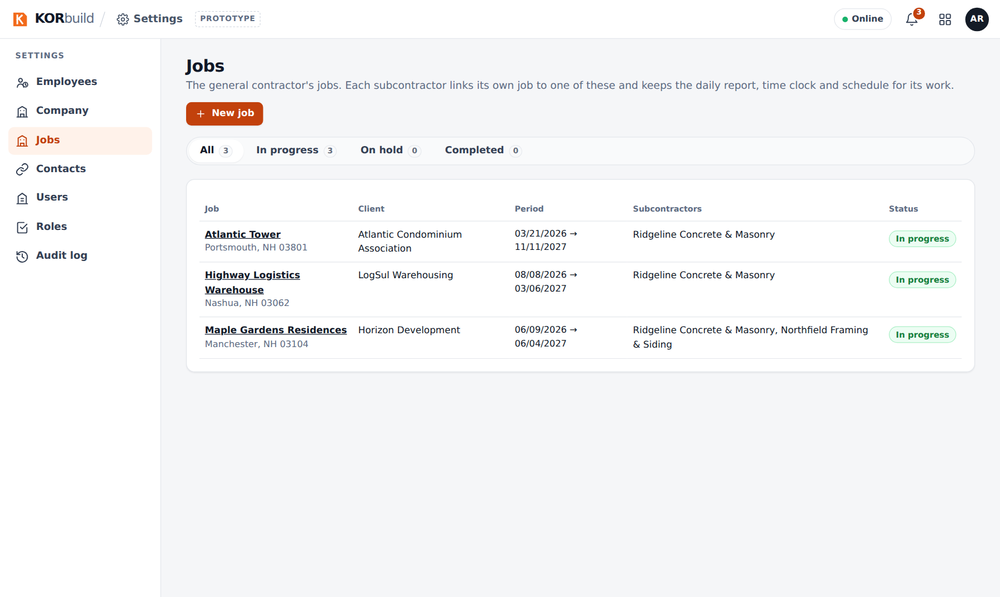

Settings is where each company sets up KORbuild once, for every module: the company profile, the people (employees and users), what each role can do, the jobs and their schedules, the contacts, and — for companies that clock in their crews — the labor burden and the work rules. Nothing that a company may want to change is hard-coded.
Settings comes with every plan, at no extra cost. Each company has its own Settings and never sees another company's (see How KORbuild is organized).
Why it matters
- Entered once, used everywhere. Jobs, employees and contacts are the same in Daily, Crew and Measure. A job's location drives the time clock geofence and the weather on the daily report; an employee's hourly rate drives the job cost.
- Nothing rewrites the past. Hourly rates, labor burden and work rules change from a date. Approved weeks and past costs stay exactly as they were.
- Every change has an author. The audit log records who changed what, when, before and after, and why.
- Access the company decides. Roles are a matrix of permissions the company can adjust — including a separate permission to see dollar amounts.
What is in Settings
| Section | What it holds | Who has it |
|---|---|---|
| Employees | The people who work on the jobs: trade, crew, W-2 or 1099, FLSA status, hire date, certifications and hourly rate history. Company (employer) shows the account they belong to. | Every company (a general contractor's employees are its management staff) |
| Labor burden | Payroll taxes and benefits on top of wages (FICA, FUTA, SUTA, workers' comp, benefits), with effective dates. | Companies with Crew |
| Work rules | Overtime (weekly, daily, double time) and breaks, with effective dates and state templates. | Companies with Crew |
| Company | Logo, legal name, EIN, address, licenses and insurance, default proposal terms. | Every company |
| Jobs | Every job: client and owner, address and geofence, dates, who fills out the daily report, workdays, status. Task templates for schedules. | Every company |
| Contacts | One directory of the companies and people outside: general contractors, clients, suppliers, subcontractors. | Every company |
| Users | Who signs in, with which role, linked to an employee record. | Every company |
| Roles | The permission matrix: what each role can do in each module. | Every company |
| Audit log | Every change in Settings, with before and after. | Every company |
The job schedule lives on each job (Daily › Jobs › a job › Open schedule); it is described here with the jobs.

Who uses it
| Who | What they do |
|---|---|
| Admin (office manager, owner) | Everything in Settings. |
| Project manager | By default, only Jobs (create and edit jobs) — to keep wages and access with the admin. |
| Foreman, worker | Do not open Settings. |
What each role can do is adjustable: see Roles and permissions.
For a general contractor
A general contractor manages the jobs and does not clock anyone in (see How KORbuild is organized). Its Settings is lighter: no labor burden or work rules, and its jobs have no daily report owner or schedule — those belong to each subcontractor's job linked to it. The jobs list shows the subcontractors working on each job.
